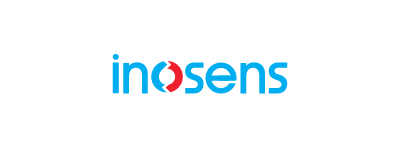

Inosens
AI Developer
September 2025 - February 2026
- Built time series forecasting models (Prophet, ARIMA, SARIMA) on production datasets.
- Analyzed wearable sensor signals using NeuroKit, performing data cleaning and feature extraction.
- Developed machine learning models to predict patient scores in physiotherapy games.
- Trained video-based models with PyTorch and MediaPipe to evaluate exercise correctness.